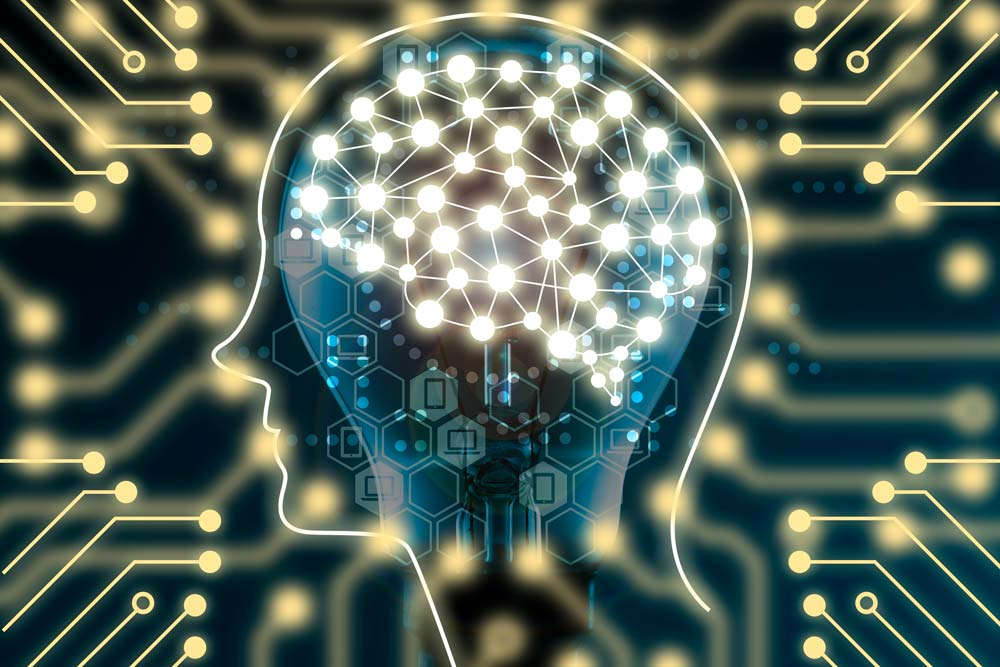
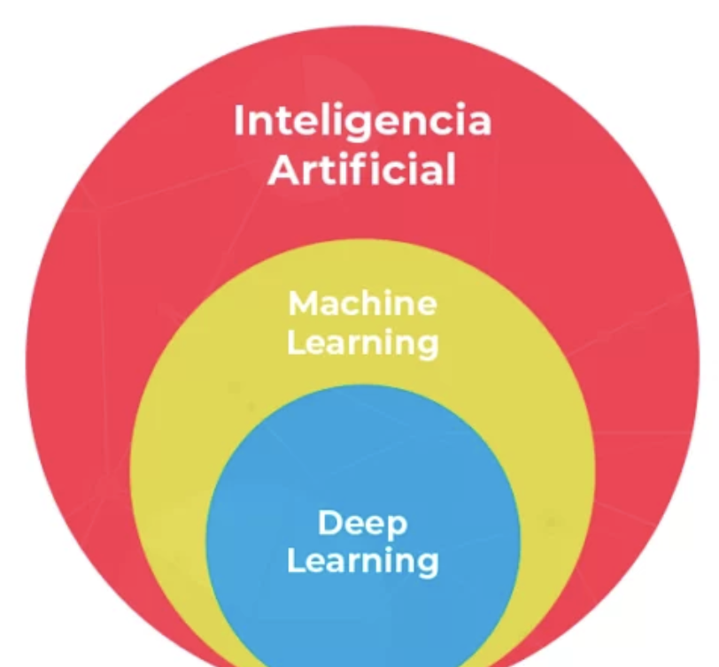

¿Sabes que la mayoría de la gente realidad no sabe lo que es la
inteligencia artificial?
La inteligencia artificial puede sonar como un concepto muy
novedoso, pero es una tecnología que se está desarrollando desde la
Segunda Guerra Mundial.
La inteligencia artificial, engloba por definición
cualquier cosa que simula el comportamiento humano,
como por ejemplo Siri de Apple o Alexa de Amazon. Ambas podrían
considerarse como inteligentes artificiales porque simulan una
interacción con un ser humano.
Lo cierto es que hemos normalizado tanto nuestro día a día algunas
herramientas de inteligencia artificial, que ya ni siquiera le
llamamos así, pero realmente llevamos muchísimos años interactuando
con ellas.
Ahora ha habido un auténtico BOOM en el mundo de inteligencia
artificial y parece que está en boca de todo el mundo, pero la
pregunta es:
¿de qué tecnología estamos hablando realmente cuando nos referimos
a la inteligencia artificial?
Y la respuesta es:
Machine Learning

El Machine Learning es un software, como tantos que
usas a lo largo de tu día, pero que tiene una particularidad y es
que es capaz de aprender y automejorarse.
Imagina, por ejemplo, que Microsoft quisiera sacar una nueva versión
de Windows 12. Lo que hará entonces, será recopilar toda la
información sobre las cosas que han fallado en la versión anterior,
para obtener una versión nueva con todo esto corregido.
Obviamente, para hacer esto necesitarían miles de desarrolladores
trabajando para esto. ¿Qué cambiaría con el Machine Learning?
Lo primero que hay que entender, es que ahora mismo esta tecnología
no tiene la capacidad de generar una versión nueva de Windows, es
sólo un ejemplo.
Lo que haría el Machine Learning es automatizar
el proceso y ver qué cosas fallan y ver qué cosas van bien, y con
eso:
AUTOMEJORARSE.
Se automatiza la mejora del producto. Y esto es algo que puede
aplicarse a todas las industrias.
Actualmente, estamos tomando al Machine Learning y a la Inteligencia
Artificial como sinónimos. Y esto técnicamente es incorrecto, pero
al final el Machine Learning es la tecnología que se ha comido
prácticamente todo el mercado de la Inteligencia artificial. De
hecho, dentro del Machine Learning también tenemos otras tecnologías
como el
Deep Learning y las Redes Neuronales.

Aprende inteligencia artificial con ConquerBlocks
¿Cuál es la conclusión entonces de todo esto?
Pues que si quieres convertirte en un desarrollador de
Inteligencia Artificial tienes que aprender sí o sí esta
tecnología: Machine Learning.
Precisamente por esta razón, en nuestro máster nos hemos enfocado en
el Machine Learning y en todas sus ramas.
Ten en cuenta que los trabajos relacionados a la IA pueden superar
los 100.000€ al año. Sin duda, una oportunidad laboral presente y
futura muy grande, si te gusta.
No importa si no tienes conocimientos previos sobre programación, si
tienes ganas de aprender , en Conquer nos encargamos de eso.
➡️ Si quieres más información sobre el Master de Inteligencia
Artificial,
pulsa aquí.